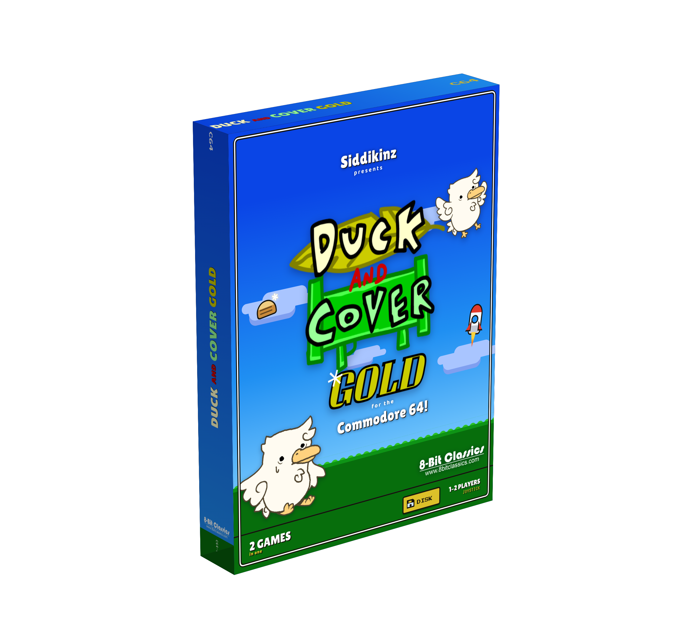
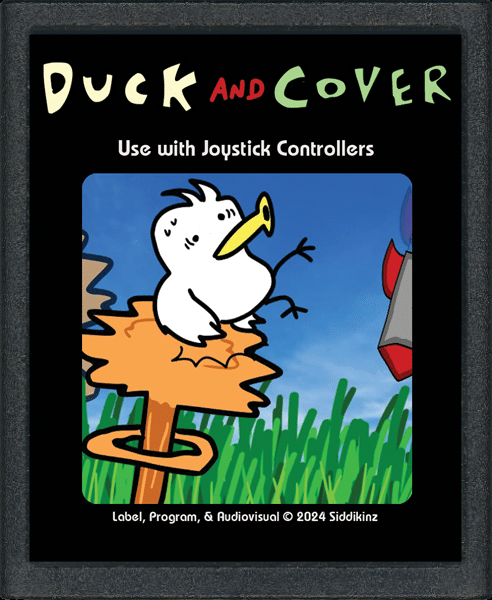
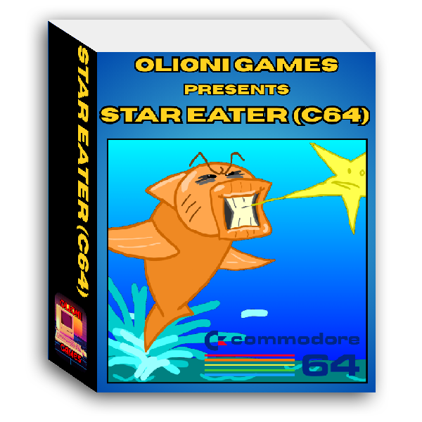
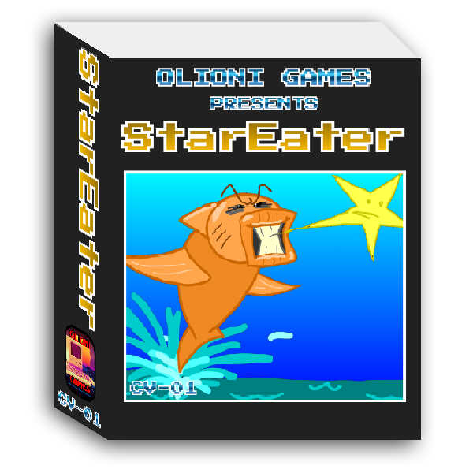

Welcome to the physical games section!
Here you will find information and store pages for physical games I programmed.

Duck and Cover GOLD (C64)
This compilation disk contains both the original Duck and Cover as well as Duck and Cover 2, programmed from the ground up for the C64.
Both games have 32 game modes each, and multi-player options for use with joystick 2.
It also features 4 bonus games on the same disk. The deluxe physical edition comes with game disk, box, and full colour manual.
Est. price: $29.99
STORE PAGE
Duck and Cover (Atari 2600)
In this game you must take to the skies as a duck, and avoid incoming rockets and explosions.
Features 32 game modes, and a multi-player option.
Est. price: $24.99
STORE PAGE
Star Eater (C64)
Star Eater is a simple but addicting game where you need to swim and jump as a fish to collect stars in the sky.
Patrolling helicopters will hinder your quest, blocking the sky and dropping bombs in the water.
Est. price: $29.99
STORE PAGE
Star Eater (ColecoVision)
This is the ColecoVision version of Star Eater, and it has some impactful differences to shake up gameplay.
This version features a multi-player competitive mode, multiple difficulties, and a lives system.
Est. price $29.99
STORE PAGE